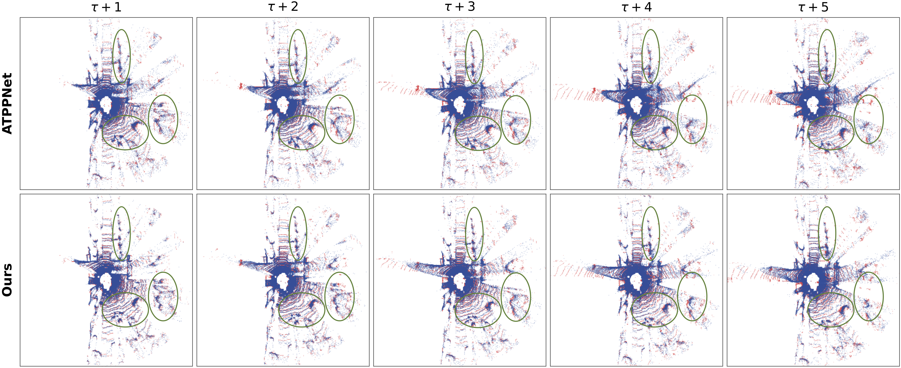
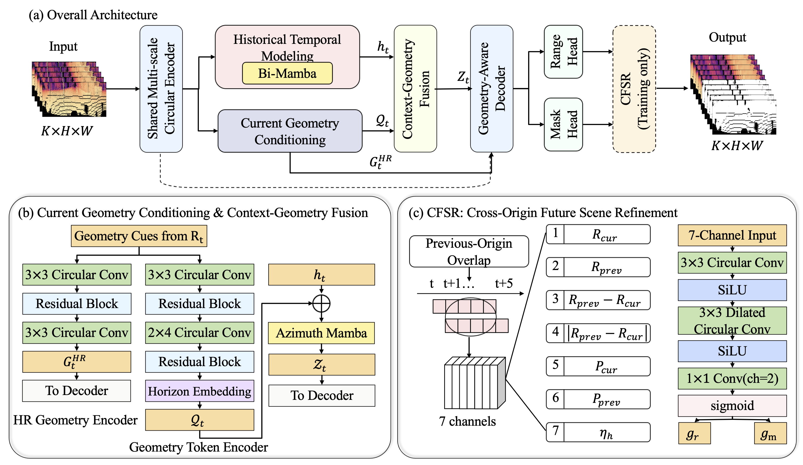

FTRNet revisits range-view LiDAR point cloud prediction from the perspective of temporal relationships among future predictions. It explicitly constructs horizon-specific future representations and exploits overlapping predictions from adjacent forecast origins for selective refinement.


FTRNet first models historical temporal context from past range views. Current geometry is combined with learnable horizon embeddings to construct horizon-conditioned future representations before decoding. CFSR further uses cross-origin overlapping predictions during training for selective refinement.
| Method | Mean Range Loss | Mean CD |
|---|---|---|
| TCNet | 0.771 | 0.387 |
| PCPNet-Sem. | 0.719 | 0.365 |
| ATPPNet | 0.663 | 0.335 |
| PCPMamba | 0.615 | 0.298 |
| FTRNet | 0.567 | 0.255 |
| Method | Mean Range Loss | Mean CD |
|---|---|---|
| TCNet | 0.719 | 1.389 |
| PCPNet-Sem. | 0.704 | 1.360 |
| ATPPNet | 0.598 | 0.932 |
| PCPMamba | 0.619 | 0.523 |
| FTRNet | 0.379 | 0.646 |
Additional qualitative results and dynamic LiDAR forecasting visualizations will be added here.
Citation information will be provided upon publication.